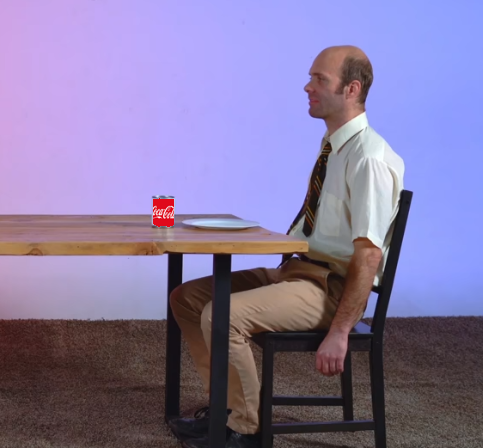

|  |
|---|
| RSE-040-2 observed sitting at the kitchen table. |
RSE-040 is what most would describe as an average American family. They were originally observed living in a home on the 8300 block of Paloma Drive in Orland Park, Illinois. RSE-040 was first reported to police on ████ 11, 201█ by neighbors of the home where RSE-040 resided after noticing they never saw their neighbors leave the home or move the cars in their driveway. The call was forwarded to the RSE foundation who came to investigate the structure. Upon arrival, they found a family inhabiting the home who showed no interest in them or the fact that they just broke down their door. The family consisted of a mother and father figure, a juvenile male, a juvenile female, as well as two dogs, the breeds of which have not been determined yet. The family was transported, without resistance, to a containment chamber in Location 02 as Location 01 did not have the proper space to house a family.
The family underwent testing upon arrival to Location 02.
The mother figure, designated RSE-040-1, is described as an average caucasian female with dirty blonde hair, estimated to be in the age range of 33 to 37, weighing about 145 pounds, and measuring 5 feet 7 inches tall. She spends most of her time in the containment chamber, replicated to mimic the home they inhabited, cooking meals and cleaning. RSE-040-1 never leaves the kitchen to obtain the ingredients and it is unknown how she obtains them. RSE observers put RSE-040 under 24-hour surveillance and at some point throughout the night would become unbearably tired and pass out for about 2-8 minutes, during which time RSE-040-1 would have a fully restocked fridge. The ingredients have not been given a designation.
The father figure, designated RSE-040-2, is described as a caucasian male with brown hair, although showing early signs of hair loss, of a strong build, estimated to be between 36 and 39 years old, weighing about 190 pounds, and measuring 6 feet 2 inches tall. He spends most of his time in his office mimicking the actions of someone with a work-from-home job or watching TV in the living room. During his work, he stares at his computer screen, which has been observed to be on but not displaying any meaningful information, as well as having voice call meetings with supposed colleagues, however no sound has ever been observed coming from the room other than those of RSE-040-2. The TV in the living room is fitted with standard channels, including sports games, of which RSE-040-2 typically watches football and baseball games, although RSE-040-2 does not appear to have any favorite team and will cheer on one of the two teams playing seemingly at random. The computer he works on is a standard edition PC, assembled in an office on-site by Foundation personnel, running the Windows 10 operating system, and as such has not been designated.
The juvenile male, designated RSE-040-3, is described as a caucasian male with light brown hair and freckles, estimated to be about 12 years old, weighing about 105 pounds, and measuring 4 feet 11 inches. He spends his time playing video games on a Foundation issued console, designed to mimic the functions of a PlayStation 5, as well as doing homework issued by a nameless teacher. RSE-040-3 is completely quiet during homework sessions but has shown to get irate whilst playing video games at times, often yelling, but never saying any real obscenities. Samples of homework from RSE-040-3, designated RSE-040-3-alpha, consist of mostly math, however science and history assignments have been observed. RSE-040-3 never fills in the name slot at the top of the page, but does write in the date, although for unknown reasons the date is inconsistent with the current date if the current date is in late November, late December, early January, early April, June, July, or August.
Similarly to RSE-040-1, observers of RSE-040-3 will pass out for 2-8 minutes at some point throughout the day, and during this time, new RSE-040-3-alpha instances will already have appeared.
The juvenile female, designated RSE-040-4, is described as a caucasian female with blonde hair and glasses, estimated to be about 8 years of age, weighing about 50 pounds, and measuring 4 feet tall. She spends almost all of her time in her room, and unlike the other members of RSE-040, has never been observed going to the bathroom. RSE-040-4 has been observed to eat, so it is unknown how RSE-040-4 digests and removes the food from her body. While in her room, she is observed playing often with dolls and practicing ballet.
Members of RSE-040 have been observed to partake in familial activities, such as game nights and family dinners. The games they play seem to be carbon copies of existing board games with minor misspellings or grammatical changes. The family dinners consist of the meals RSE-040-1 cooks. If these activities are interrupted, all members of the family will become irate and scream at the intruder to leave. They have not shown to act violently when the intruder stays, however they will not stop screaming until the person has left. It has been noted that during this enraged state, all members of the family are immovable by the intruder(s) and will remain fixed in place until the offender has left. As soon as they are out of the boundaries of the containment chamber, the activity will resume as if nothing ever happened.
Upon further investigation, the home that RSE-040 inhabited does not appear to have any anomalous properties, however as it is still pending further investigation has been temporarily designated RSE-040-5.
The members of RSE-040 are contained in a large containment chamber in Location 02 built and designed to mimic the interior design of RSE-040-5. RSE-040-5 is a home built in 1982, with 4 bedrooms and 3 bathrooms, on the 8300 block of Paloma Drive in Orland Park, Illinois. As it is under investigation for anomalous properties, it can not be moved or contained, and is instead patrolled by Foundation personnel to catch and remove trespassers.